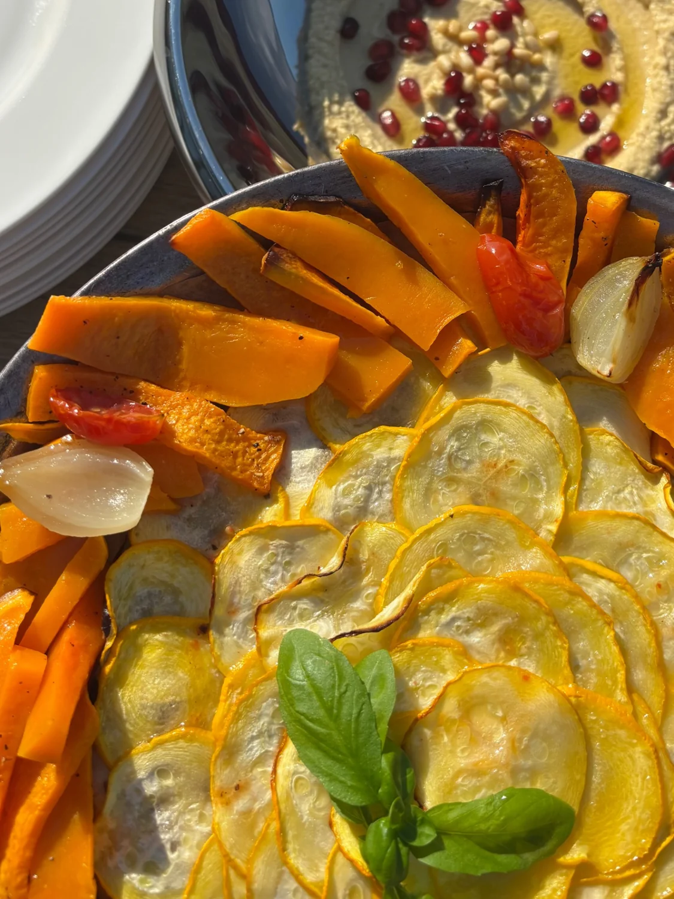

← All catering
COLD, WARM OR BOTH
A buffet your way
Choose cold platters, warm dishes or a combination. We’ll put together a menu around your wishes.
Price on request

Let’s make
something lovely.
An idea or a plan already in mind? Tell me about it. I’ll personally reply within 48 hours.